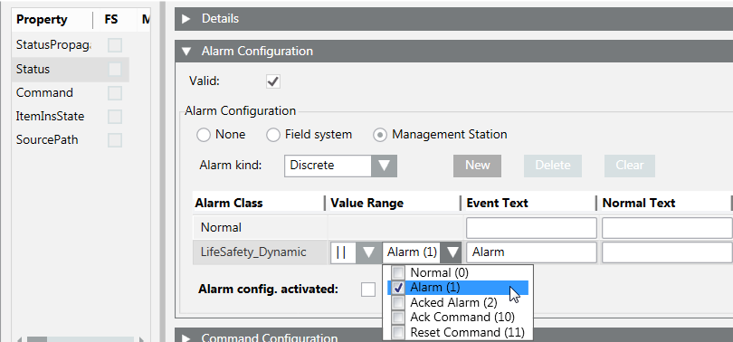
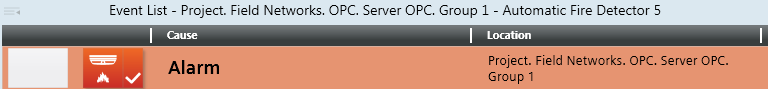

Configure OPC Fire Alarms
Alarms display in Event List (see Figure The Configured Alarm Displays in Event List) and in the Extended Operation tab of the OPC Network data points (see Configure OPC Fire Commands).
- In the customized OPC library, under Object Model, select an object (for example, Automatic Fire Detector).
- In the Model & Functions tab, open the Properties expander.
- Click the Status property.
- Open the Alarm Configuration expander.
- Select the Valid check box.
- Select the Management Station option button.
- From the drop-down list of the Alarm Class column, select an alarm class (for example, LifeSafety_Dynamic).
Select only alarm classes ending with "_Dynamic", to fully manage commands in Event List. - From the drop-down list of the Value Range column, select the input value to associate to the alarm class (for example, the value Alarm (1), which you typed in the associated text group.
- In the text field of the Event Text column, type the text to display in Event List.
NOTE: For detailed information about alarm configuration, press F1 for the online help. - Select the Alarm config. activated check box, to activate the alarm.
- Repeat the procedure for all objects.

